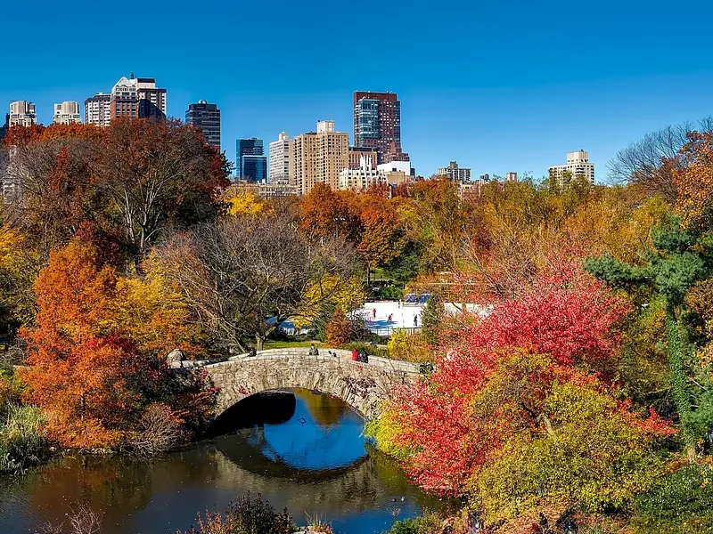
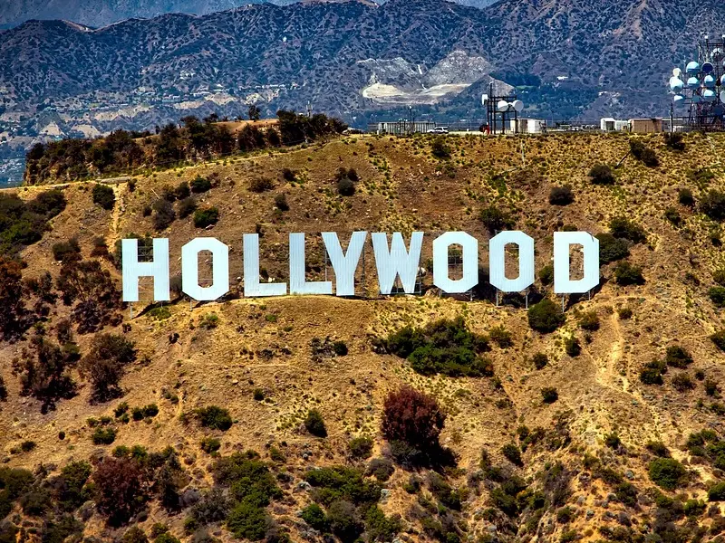
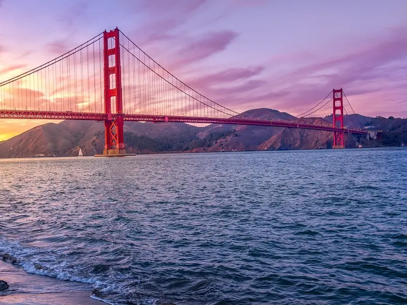
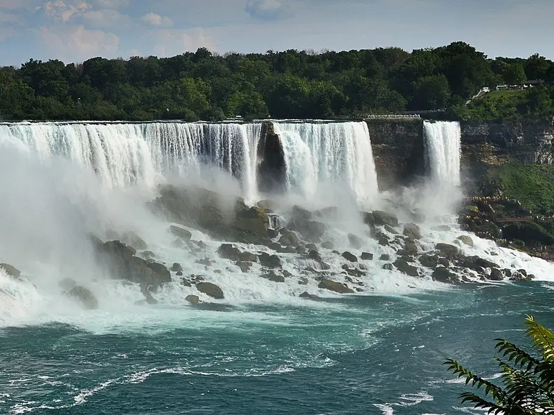

Pbu agência de intercâmbio
Pontos turístico
Os pontos turísticos dos Estados Unidos são os principais atrativos para os viajantes. Estes monumentos e paisagens do Estados Unidos são fascinantes e proporcionam experiências maravilhosas para quem visita. Os EUA possuem lindas paisagens e locais imperdíveis, como lugares históricos e parques. E o melhor: muitos deles são totalmente gratuitos ou com valores simbólicos. Além de conhecidos mundialmente, eles são capazes de agradar a todos os tipos de viajantes.
Exemplos:

Estátua da Liberdade
Ela foi um presente da França para os Estados Unidos e é reconhecida como um símbolo
universal de liberdade e democracia, além de ser considerada uma forma de dar
boas-vindas aos visitantes que chegam em Nova York.

Central Park
Embora o parque pareça natural, ele foi construído para dar um lado mais aconchegante à
cidade, incluindo os lagos que possuem dentro dele.
O Central Park é gratuito e possui diversas atrações, como duas pistas de patinação no
gelo, teatro e o zoológico, que todos conhecem pelo filme Madagascar.

Letreiro de Hollywood
O letreiro de Hollywood pode ser visto praticamente por todas as partes de Los Angeles,
na Califórnia. Inicialmente, foi criado para vender casas de um condomínio, mas acabou
virando símbolo da cidade e hoje recebe milhões de pessoas por ano. Conheça as opções de
tours guiados pelo letreiro de Hollywood.

Las Vegas Strip
A avenida Las Vegas Strip possui a extensão de 7 km e é nessa área que concentra 80% de
todo o entretenimento e atrações turísticas oferecido pela cidade de Las Vegas, assim
como também os principais hotéis, shows e cassinos. Conheça as atividades turísticas em
Las Vegas Strip.
Além de grandes hotéis estarem localizados nessa avenida, esses mesmos estabelecimentos
trazem partes do mundo todo para um só lugar.

Golden Gate
A ponte Golden Gate, que liga a cidade de São Francisco a Sausalito, na região
metropolitana de São Francisco, na Califórnia, foi construída em 1937 e é o principal
cartão-postal da cidade.
O monumento é considerado uma das Sete maravilhas do Mundo Moderno pela Sociedade
Americana de Engenheiros Civis. Você pode visitar essa ponte nos passeios guiados por
São Francisco.

Cataratas do Niágara
As cataratas do Niágara estão localizadas no Rio Niágara, que fica na fronteira entre os Estados Unidos e o Canadá, e possuem quedas d’águas com volume médio de 2.400m³/s. No lado dos Estados Unidos, as cataratas ficam na cidade de Buffalo